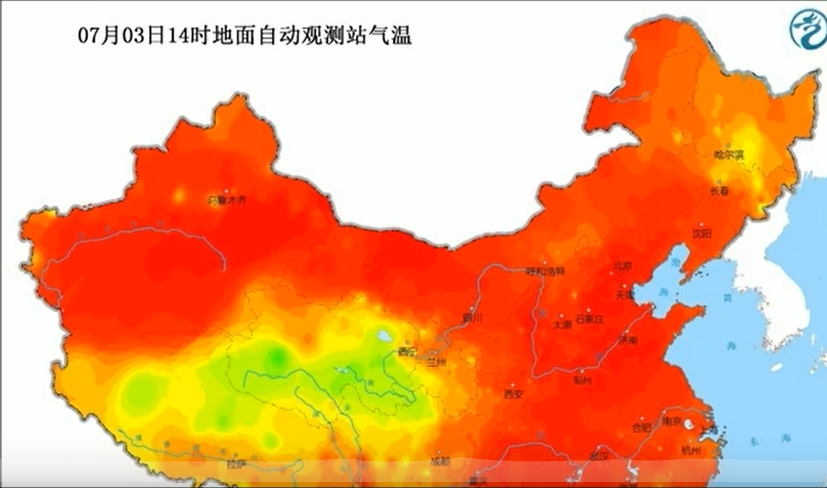

2022年1月17日0—24时，31个省（自治区、直辖市）和新疆生产建设兵团报告新增确诊病例171例。其中境外输入病例44例（上海17例，广东13例，云南4例，北京s3例，四川3例，辽宁1例，福建1例，湖南1例，广西1例），含6例由无症状感染者转为确诊病例（广东3例，辽宁1例，湖南1例，广西1例）；本土病例127例（河南102例，其中安阳市94例、郑州市4例、许昌市4例；天津18例，其中津南区15例、西青区2例、河西区1例；广东5例，均在珠海市；北京1例，在海淀区；陕西1例，在西安市）。无新增死亡病例。新增疑似病例3例，均为境外输入病例（均在上海）。

境外输入现有确诊病例1285例（无重症病例），现有疑似病例8例。累计确诊病例12168例，累计治愈出院病例10883例，无死亡病例。
截至1月17日24时，据31个省（自治区、直辖市）和新疆生产建设兵团报告，现有确诊病例3530例（其中重症病例14例），累计治愈出院病例97092例，累计死亡病例4636例，累计报告确诊病例105258例，现有疑似病例8例。累计追踪到密切接触者1486846人，尚在医学观察的密切接触者56835人。
31个省（自治区、直辖市）和新疆生产建设兵团报告新增无症状感染者33例，其中境外输入32例，本土1例（在辽宁大连市）；当日转为确诊病例6例（均为境外输入）；当日解除医学观察9例（均为境外输入）；尚在医学观察的无症状感染者760例（境外输入709例）。